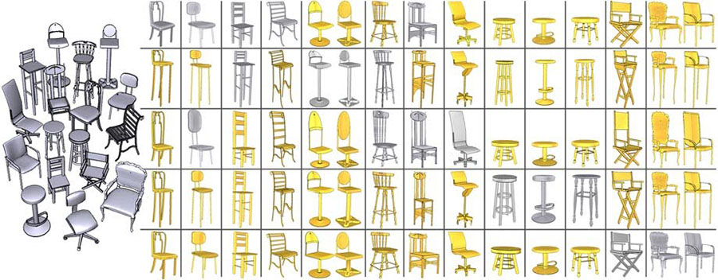
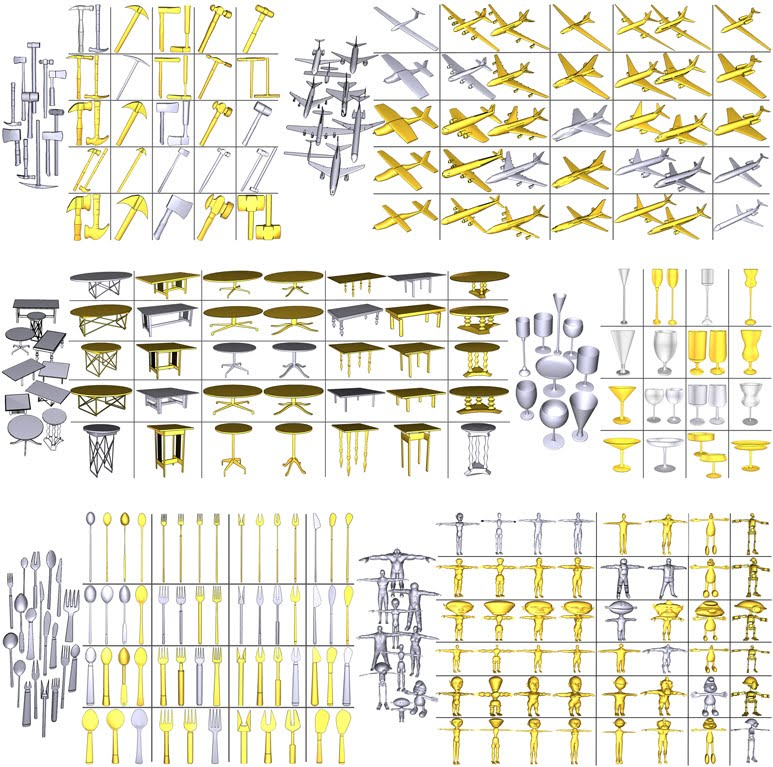
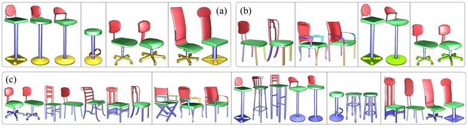

Style-Content Separation by Anisotropic Part Scales
Kai Xu1,
Honghua Li2,3,
Hao Zhang3, Daniel Cohen-Or2, Yueshan Xiong4, Zhiquan Cheng2
1Simon
Fraser University, 2National
University of
Defense Technology, 3Tev Aviv University
ACM Transactions
on Graphics (SIGGRAPH Asia 2010), 29(5)

Figure 1: Style-content separation by anisotropic part scales facilitates
part correspondence among a diverse set of chairs (left).
The separation is shown by the table with rows representing identified
styles. The correspondences allow automatic synthesis of novel
shapes (shaded in gold) from the example set via style transfer.
|
Abstract
|
We perform co-analysis of a set of man-made 3D objects to allow the creation of novel instances derived from the set. We analyze the objects at the part level and treat the anisotropic part scales as a shape style. The co-analysis then allows style transfer to synthesize new objects. The key to co-analysis is part correspondence, where a major challenge is the handling of large style variations and diverse geometric content in the shape set. We propose style-content separation as a means to address this challenge. Specifically, we define a correspondence-free style signature for style clustering. We show that confining analysis to within a style cluster facilitates tasks such as co-segmentation, content classification, and deformation-driven part correspondence. With part correspondence between each pair of shapes in the set, style transfer can be easily performed. We demonstrate our analysis and synthesis results on several sets of man-made objects with style and content variations.
|
|
|
Paper |
|
|
|
Slides |
|
|
|
| Images |

Figure
2: A gallery of tables (row: style; column: content) for six data sets: hummers, airplanes, tables, kitchen utensils, goblets, and humanoid bodies. Newly synthesized models (in gold) fill the tables.

Figure
3: Results of co-segmentation and D2F-based inter-style part correspondence on three subsets (a-c) of the chair and stool set. In each subset, models are grouped by style clusters.
|
|
|
| Data |
|
|
|
| Thanks |
We first thank the anonymous reviewers for their valuable comments.
We are grateful to Aleksey Golovinskiy, Joshua Podolak,
Thomas Funkhouser, Michael Kazhdan, and Ding-Yun Chen for
sharing their software or source code on consistent segmentation,
symmetry detection, as well as spherical harmonics and light field
shape descriptors. Thanks also go to Yanzhen Wang and Ariel
Shamir for discussions on the topic. This work is supported in
part by grants from NSERC (No. 611370), the Israeli Ministry
of Science, the Israel Science Foundation, the 863 Program of
China (No. 2007AA01Z313 and 2009AA01Z301), NSFC (No.
60773022, 60773020, and 60970094), and the Pre-research funding
of National University of Defense Technology (No. JC09-06-01).
|
|
|
| Bibtex |
@article
{xu_siga10,
title = {Style-Content Separation by Anisotropic Part Scales},
author
= {Kai Xu and Honghua Li and Hao Zhang and Daniel Cohen-Or and Yueshan Xiong and Zhiquan Cheng}
journal
= {ACM Transactions on Graphics (Proc. of SIGGRAPH Asia 2010)},
volume
= {29},
number
= {5},
pages
= {184:1--184:10},
year
= {2010}
}
|
 
|